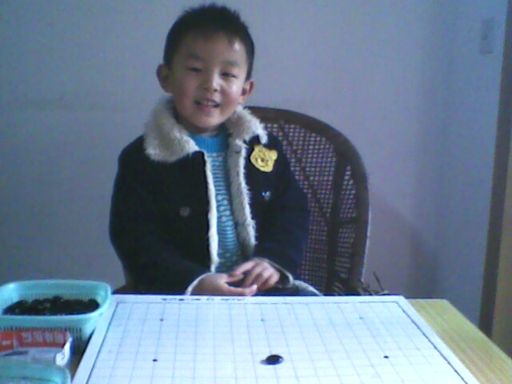

月马谈育儿经：幼儿学五子棋有好处
#1 月马谈育儿经：幼儿学五子棋有好处 作者：足球赛 发表时间：2010-8-13 16:52:20
看看题目似乎与图书馆没什么关系，其实大家想想图书馆的作用是什么，教育不正是其一大功能吗？月马在这里通过自己浅陋的育儿经验与大家一起探讨一下如何育儿。同时，学棋中需要用到一些图书，有些图书我们馆还是比较欠缺的。
列宁曾说过： 弈棋是智慧的体操。重点中学的优秀生及清华北大博士生曾深有体会的说：奥林匹克数学是打开高智商的钥匙，连珠五子棋则是学好奥林匹克数学最轻松的伴侣。 按照专家的建议提高学习成绩最重要的是提高逻辑思维能力，而学棋是提高学习成绩的最好方法之一。小儿还小，提高学习成绩之类的说法也没有考虑过，培养小儿下棋的目的只是开发智力。那么今天月马先跟大家一起谈谈小孩子学习五子棋的一些事。
很多人也许会说，我教过他（她）了，可是他（她）根本没有兴趣。其实教小孩子学棋不是一件很容易的事，但是一旦成功收获将是不错的。
记得刚刚在小月马二岁多的时候，我就尝试教他下五子棋，可是小月马对五子棋根本就没兴趣而且很好动静不下来，唯一的兴趣就是把棋子从一个容器倒进另一个容器，接着又重复或者是把棋子藏起来。这个时候，不用着急，也不要放弃了，最起码的一点：小孩子喜欢这个黑白的棋子，最起码他还在用棋子来玩。于是，我就陪着他这样玩了半年。
真正开始对五子棋有兴趣也是一次不经意的机会，当然有时候机会来时感觉得来全不费工夫，而先前在等待的时候却怎么也找不到切入点。其实，自己的孩子只有自己清楚小孩喜欢什么，所以开始可以是千变万化的，这个很难有参考价值。小月马对五子棋感兴趣的时候约3岁半了，是一次我单独摆出了一个双三后激发了他的兴趣。
其实，小孩子学习五子棋可以从用五子棋摆图形开始。当然五子棋里的最简单的图形就是直线了。可以摆上三粒，也可摆上四粒或五粒棋子。因为五子棋是全民皆会的项目，所以月马也就不啰嗦怎么下法了。不过，很多家长到了一定的层次后就很难上一个台阶了。这个也就是也就是大部分家长会的一层：只知道双活三、双卡四或者是活三卡四可以赢棋。到了第二层：知道冲四活三、活卡五活三也能赢。当然后面还有更高的层次，不过一般能到这层也就可以了。
小孩子学会五子棋后还要家长花一定的时间和他（她）一起玩才能更好的体现出学五子棋的效果。现在我把幼儿学习五子棋的好处罗列几点，如有遗漏请大家回复评论补上。幼儿学习五子棋的好处：
1、 养成能静的习惯，学棋后感觉注意力的集中时间有所提高，一般小孩在四岁左右只能静15分钟左右，通过学棋后小孩子的注意力集中时间一般能提高到30分钟左右；
2、 培养小孩的挫折感，现在小孩最缺的就是挫折感，其实培养小孩子的挫折承受能力也是非常重要的，由于小孩子比较小培养的过程只能是逐步的；
3、 培养小孩的数学能力，因为在下棋中会思考到很多如果和假设，五子棋很注重的逻辑思维，有时候往往要预先想上好几步，而且有时候还要逆向思维；
以上是月马对幼儿学五子棋的一些粗陋想法，欢迎大家拍砖

#2 Re:月马谈育儿经：幼儿学五子棋有好处 作者：灵子 发表时间：2010-8-14 3:19:23
非常赞同，兴趣是最好的老师，教孩子学什么必须让孩子先有兴趣进而发现乐趣。#3 Re:月马谈育儿经：幼儿学五子棋有好处 作者：霸王龙 发表时间：2010-8-16 18:56:07
我也赞同:兴趣是最好的老师#4 Re:月马谈育儿经：幼儿学五子棋有好处 作者：王安石 发表时间：2012-2-4 10:13:43
孩子是未来的希望啊，从小就让他们接受五子教育，肯定会帮助很大的，呵呵呵呵#5 Re:月马谈育儿经：幼儿学五子棋有好处 作者：甜心 发表时间：2012-4-2 12:55:47
应该多大让孩子开始接触五子棋？ 3岁？